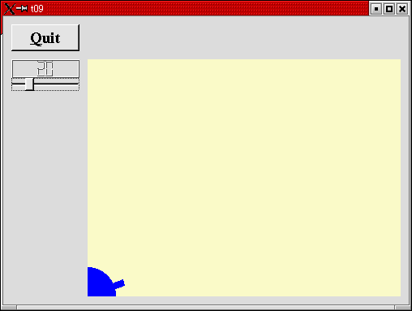
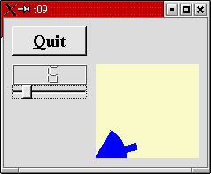

トップページ＞＞＞
「ぷろぐらみんぐ」目次＞＞＞
「Qt Tutorial Index Page」
Chapter 9: With Cannon You Can
初版作成：2002/01/04
- ソースコード
- 解説
- コンパイル・動作確認
- いじくりまわす

さて今回の作例でようやくグラフィックぽいのを始めます。ちっちゃな青い砲台をCannonFieldに描画しましょう。
LCDRangeのスライダを操作するとその角度に応じて砲台も回転します。
今回修正したファイルは cannon.cpp と main.cpp だけです。他は前回のChapterのものを丸写しして使って下さい。
また main.cpp に至っては一行付け足しただけですので、ソースコードの表示はcannon.cppのみにとどめます。
冒頭に実行画面のスナップショットを示します。
というわけで、cannon.cppを下に示します。
#include "cannon.h"
#include <qpainter.h>
CannonField::CannonField(QWidget *parent,const char *name)
: QWidget(parent, name)
{
ang = 45;
setPalette(QPalette(QColor(250,250,200)));
}
void CannonField::setAngle(int degrees)
{
if(degrees < 5)
degrees = 5;
if(degrees > 70)
degrees = 70;
if(ang == degrees)
return;
ang = degrees;
repaint();
emit angleChanged(ang);
}
void CannonField::paintEvent(QPaintEvent *)
{
QPainter p(this);
p.setBrush(blue);
p.setPen(NoPen);
p.translate(0, rect().bottom());
p.drawPie(QRect(-35, -35, 70, 70), 0, 90*16);
p.rotate(-ang);
p.drawRect(QRect(33, -4, 15, 8));
}
QSizePolicy CannonField::sizePolicy() const
{
return QSizePolicy(QSizePolicy::Expanding, QSizePolicy::Expanding);
}
main.cppの変更箇所を示します。
変更前：
QApplication a(argc, argv);
変更後：
QApplication::setColorSpec(QApplication::CustomColor);
QApplication a(argc, argv);
QApplicationのコンストラクタの前に一行付け足しただけです。
目次に戻る
それではポイント部分の解説を行っていきます。
void CannonField::paintEvent( QPaintEvent * )
{
QPainter p( this );
QPainterを使って簡単に描画処理を始められます。このウィジェットに対するペインターオブジェクトを生成します。
BCBやDelphiでのCanvasオブジェクトの生成、ちゅーことです。
p.setBrush( blue );
QPainterには砲台を描くのに矩形描画や円形描画を行わせます。そのさい塗りつぶしとしてブラシを用いますが、ここでは
青い色の単純な塗りつぶしを指定しています（パターンを用いることもできます）。
p.setPen( NoPen );
領域描画の"縁"を描く際にはQPainterは(Canvasのそれと同様に)ペンを使います。今回の作例では砲台の縁を描く必要
が無いので、何も描かない特殊なペンとして NoPen を指定しています。これによって描画するエッジに至るまで全て青い
ブラシで塗りつぶされることになります。
p.translate( 0, rect().bottom() );
QPainter::translate()関数はQPainterの座標空間を変換します。たとえば今回の作例ではオフセット値を利用して座標原点
(0,0)をウィジェット左下隅に設定しました。注意が必要なのはx と y 座標の方向は変わっていないので、今回の例では
ウィジェット内部の y 座標は全て負の値になるということです。詳細についてはQtの座標システムに関するドキュメントを
参照して下さい。
とにかく、意外と簡単で結構便利かも。
p.drawPie( QRect(-35, -35, 70, 70), 0, 90*16 );
drawPie()関数は、QRectで指定された矩形中に楕円を描く関数です。第一引数に矩形領域を。第二引数に開始角度を。
第三引数に描画角度（終了角度ではない）を指定します。
角度は1/16度刻みで指示します。今回なら90*16でちょうど90度分になります。0度は時計の３時方向です。描画する方向は
counter-clockwise、つまり反時計回りです。
とにかく、数学や算数の時間で習ったとおりに３時方向（つまり水平右手方向）を０度として、左回りに正の角度を
考えれば問題ありません。
今回の作例ではウィジェットの左下隅に1/4の円を描画します。円弧内部は青で塗りつぶされ、円弧外形線は描きません。
p.rotate( -ang );
QPainter::rotate()関数はQPainterの座標空間を原点に対して回転させます（なんだかひどく便利ですね！）。回転角度
は度数単位で浮動小数点で指定できます(1/16度刻みでは無いことに注意！！）。回転方向は正数の指定で時計方向になり
ます。
今回の作例では -ang として負数を渡していますので counter-clockwise、つまり反時計回りに ang 度だけ回転します。
p.drawRect( QRect(33, -4, 15, 8) );
QPainter::drawRect()はその名の通りQRectで与えられた矩形領域を描画します。今回の作例ではちょうど砲身部分を描画
しています。
今回の作例くらいならまだましですが、複雑にtranslate, rotated, scaled, shearedされた座標空間に描画された図形を
頭に思い描くのは非常に難しいものとなります。
今回の作例では最初に座標空間の移動(translated)されてから回転(rotated)されています。もしQRect(33, -4, 15, 8)
がtranslatedされた段階で描画されていたら、下に示すようにいつも同じ場所に描画されてしまいます。
描画する矩形範囲のちょうど下半分くらいはCannonFieldウィジェットの境界線によりクリップされてしまうことに注意
して下さい。もし60度反時計回りに座標空間を回転させれば、描画矩形も(0,0)を中心に回転するため下に示すように描画
されるはずです。
最後に8bitディスプレイの設定などで色化けするのを防ぐ部分の解説をします。
int main( int argc, char **argv )
{
QApplication::setColorSpec( QApplication::CustomColor );
QApplication a( argc, argv );
このsetColorSpecによってこのプログラムでは通常と異なるカラーパレット（？と言って良いのかな？）を使うように
Qtを設定しています。ちょっと・・・color allocation strategy の的確な日本語訳が思い当たりませんので、ここでは
原文を掲載することにします。
We tell Qt that we want a different color allocation strategy for this program.
There is no single correct color allocation strategy. Since this program uses an
unusual yellow but not many colors, CustomColor is best.
There are several other allocation strategies. You can read about them in the
QApplication::setColorSpec() documentation.
Mostly, you can ignore this - the default is good. Occasionally some applications
with unusual color use look bad, and often changing the allocation strategy helps.
どちらにせよ8bit-256色のディスプレイも使う可能性が高いときはこれを使った方がいいですよ、ということらしい。
正直よくわかりません。
目次に戻る
んじゃあ、コンパイルしてみましょう。
[fenjin@murasame t09]$ ls
cannon.cpp cannon.h lcdrange.cpp lcdrange.h main.cpp
[fenjin@murasame t09]$ progen -n t09 -o t09.pro
[fenjin@murasame t09]$ tmake -o Makefile t09.pro
[fenjin@murasame t09]$ make
g++ -c -pipe -Wall -W -O2 -DNO_DEBUG -I/usr/lib/qt/include -o cannon.o cannon.cpp
g++ -c -pipe -Wall -W -O2 -DNO_DEBUG -I/usr/lib/qt/include -o lcdrange.o lcdrange.cpp
g++ -c -pipe -Wall -W -O2 -DNO_DEBUG -I/usr/lib/qt/include -o main.o main.cpp
/usr/lib/qt/bin/moc cannon.h -o moc_cannon.cpp
g++ -c -pipe -Wall -W -O2 -DNO_DEBUG -I/usr/lib/qt/include -o moc_cannon.o moc_cannon.cpp
/usr/lib/qt/bin/moc lcdrange.h -o moc_lcdrange.cpp
g++ -c -pipe -Wall -W -O2 -DNO_DEBUG -I/usr/lib/qt/include -o moc_lcdrange.o moc_lcdrange.cpp
g++ -o t09 cannon.o lcdrange.o main.o moc_cannon.o moc_lcdrange.o -L/usr/lib/qt/lib -L/usr/X11R6/lib -lqt -lXext -lX11 -lm
[fenjin@murasame t09]$ ls
Makefile cannon.o lcdrange.o moc_cannon.cpp moc_lcdrange.o
cannon.cpp lcdrange.cpp main.cpp moc_cannon.o t09*
cannon.h lcdrange.h main.o moc_lcdrange.cpp t09.pro
んで、実行ファイル t09 を実行すると冒頭に示したようなウインドウが表示されるわけです。左上のQuitボタンをクリック
するとアプリケーションは終了します。
いかがでしょうか。だいぶそれっぽい感じになってきました。
目次に戻る
とりあえずですね。drawPie()の角度の方向を確認するために 90 度ではなく、60 度で描画させてみましょう。
cannon.cpp
修正前：
p.drawPie(QRect(-35, -35, 70, 70), 0, 90*16);
修正後：
p.drawPie(QRect(-35, -35, 70, 70), 0, 60*16);
してみますと、下に示す結果の通り角度方向はやっぱり反時計回りと言うことで確認がとれました。

他にもペンやブラシの指定で遊んでも良いのですが、どうせBCBやDelphiと大して変わるわけでもありませんし、
何よりもいい加減年末年始をひたすらQtチュートリアルの翻訳に費やしていた気力がいよいよ尽きてきたので、残りのいじくり
まわしはみなさんにお任せします。
では、次のChapterにてお会いしましょう。
目次に戻る
トップページ＞＞＞
「ぷろぐらみんぐ」目次＞＞＞
「Qt Tutorial Index Page」